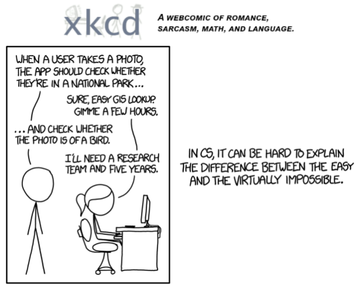

#NB: Kaggle requires phone verification to use the internet or a GPU. If you haven't done that yet, the cell below will fail
# This code is only here to check that your internet is enabled. It doesn't do anything else.
# Here's a help thread on getting your phone number verified: https://www.kaggle.com/product-feedback/135367
import socket,warnings
try:
socket.setdefaulttimeout(1)
socket.socket(socket.AF_INET, socket.SOCK_STREAM).connect(('1.1.1.1', 53))
except socket.error as ex: raise Exception("STOP: No internet. Click '>|' in top right and set 'Internet' switch to on")Is person happy?
::: {.cell _kg_hide-input=‘true’ _kg_hide-output=‘true’ execution=‘{“iopub.execute_input”:“2022-07-25T16:09:27.991401Z”,“iopub.status.busy”:“2022-07-25T16:09:27.990634Z”,“iopub.status.idle”:“2022-07-25T16:09:35.755984Z”,“shell.execute_reply”:“2022-07-25T16:09:35.755076Z”,“shell.execute_reply.started”:“2022-07-25T16:09:27.991361Z”}’ execution_count=29}
# It's a good idea to ensure you're running the latest version of any libraries you need.
# `!pip install -Uqq <libraries>` upgrades to the latest version of <libraries>
# NB: You can safely ignore any warnings or errors pip spits out about running as root or incompatibilities
import os
iskaggle = os.environ.get('KAGGLE_KERNEL_RUN_TYPE', '')
if iskaggle:
!pip install -Uqq fastai:::
In 2015 the idea of creating a computer system that could recognise birds was considered so outrageously challenging that it was the basis of this XKCD joke:

But today, we can do exactly that, in just a few minutes, using entirely free resources!
The basic steps we’ll take are:
- Use DuckDuckGo to search for images of “bird photos”
- Use DuckDuckGo to search for images of “forest photos”
- Fine-tune a pretrained neural network to recognise these two groups
- Try running this model on a picture of a bird and see if it works.
Step 1: Download images of birds and non-birds
::: {.cell _kg_hide-input=‘true’ execution=‘{“iopub.execute_input”:“2022-07-25T16:09:47.683343Z”,“iopub.status.busy”:“2022-07-25T16:09:47.683121Z”,“iopub.status.idle”:“2022-07-25T16:09:47.694420Z”,“shell.execute_reply”:“2022-07-25T16:09:47.693634Z”,“shell.execute_reply.started”:“2022-07-25T16:09:47.683314Z”}’ execution_count=31}
from fastcore.all import *
import time
def search_images(term, max_images=200):
url = 'https://duckduckgo.com/'
res = urlread(url,data={'q':term})
searchObj = re.search(r'vqd=([\d-]+)\&', res)
requestUrl = url + 'i.js'
params = dict(l='us-en', o='json', q=term, vqd=searchObj.group(1), f=',,,', p='1', v7exp='a')
urls,data = set(),{'next':1}
while len(urls)<max_images and 'next' in data:
data = urljson(requestUrl,data=params)
urls.update(L(data['results']).itemgot('image'))
requestUrl = url + data['next']
time.sleep(0.2)
return L(urls)[:max_images]:::
Let’s start by searching for a happy person photo and seeing what kind of result we get. We’ll start by getting URLs from a search:
urls = search_images('happy human face', max_images=2)
urls[0]…and then download a URL and take a look at it:
from fastdownload import download_url
dest = 'happy.jpg'
download_url(urls[0], dest, show_progress=False)
from fastai.vision.all import *
im = Image.open(dest)
im.to_thumb(256,256)Now let’s do the same with “forest photos”:
download_url(search_images('sad human face', max_images=1)[0], 'sad.jpg', show_progress=False)
Image.open('sad.jpg').to_thumb(256,256)Our searches seem to be giving reasonable results, so let’s grab 200 examples of each of “happy” and “sad” photos, and save each group of photos to a different folder:
searches = 'happy human face','sad human face'
path = Path('happy_or_not')
for o in searches:
dest = (path/o)
dest.mkdir(exist_ok=True, parents=True)
download_images(dest, urls=search_images(f'{o} photo'))
resize_images(path/o, max_size=400, dest=path/o)Step 2: Train our model
Some photos might not download correctly which could cause our model training to fail, so we’ll remove them:
failed = verify_images(get_image_files(path))
failed.map(Path.unlink)
len(failed)To train a model, we’ll need DataLoaders, which is an object that contains a training set (the images used to create a model) and a validation set (the images used to check the accuracy of a model – not used during training). In fastai we can create that easily using a DataBlock, and view sample images from it:
dls = DataBlock(
blocks=(ImageBlock, CategoryBlock),
get_items=get_image_files,
splitter=RandomSplitter(valid_pct=0.2, seed=42),
get_y=parent_label,
item_tfms=[Resize(192, method='squish')]
).dataloaders(path)
dls.show_batch(max_n=6)Here what each of the DataBlock parameters means:
blocks=(ImageBlock, CategoryBlock),The inputs to our model are images, and the outputs are categories (in this case, “happy” or “sad”).
get_items=get_image_files, To find all the inputs to our model, run the get_image_files function (which returns a list of all image files in a path).
splitter=RandomSplitter(valid_pct=0.2, seed=42),Split the data into training and validation sets randomly, using 20% of the data for the validation set.
get_y=parent_label,The labels (y values) is the name of the parent of each file (i.e. the name of the folder they’re in, which will be bird or forest).
item_tfms=[Resize(192, method='squish')]Before training, resize each image to 192x192 pixels by “squishing” it (as opposed to cropping it).
Now we’re ready to train our model. The fastest widely used computer vision model is resnet18. You can train this in a few minutes, even on a CPU! (On a GPU, it generally takes under 10 seconds…)
fastai comes with a helpful fine_tune() method which automatically uses best practices for fine tuning a pre-trained model, so we’ll use that.
learn = cnn_learner(dls, resnet18, metrics=error_rate)
learn.fine_tune(6)Generally when I run this I see 100% accuracy on the validation set (although it might vary a bit from run to run).
“Fine-tuning” a model means that we’re starting with a model someone else has trained using some other dataset (called the pretrained model), and adjusting the weights a little bit so that the model learns to recognise your particular dataset. In this case, the pretrained model was trained to recognise photos in imagenet, and widely-used computer vision dataset with images covering 1000 categories) For details on fine-tuning and why it’s important, check out the free fast.ai course.
Step 3: Use our model (and build your own!)
Let’s see what our model thinks about that bird we downloaded at the start:
is_happy,_,probs = learn.predict(PILImage.create('sad.jpg'))
print(f"This is a: {is_happy}.")
print(f"Probability it's a happy: {probs[0]:.4f}")Good job, resnet18. :)
So, as you see, in the space of a few years, creating computer vision classification models has gone from “so hard it’s a joke” to “trivially easy and free”!
It’s not just in computer vision. Thanks to deep learning, computers can now do many things which seemed impossible just a few years ago, including creating amazing artworks, and explaining jokes. It’s moving so fast that even experts in the field have trouble predicting how it’s going to impact society in the coming years.
One thing is clear – it’s important that we all do our best to understand this technology, because otherwise we’ll get left behind!
Now it’s your turn. Click “Copy & Edit” and try creating your own image classifier using your own image searches!
If you enjoyed this, please consider clicking the “upvote” button in the top-right – it’s very encouraging to us notebook authors to know when people appreciate our work.